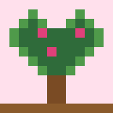
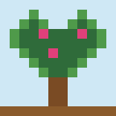
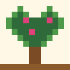

พรรณไม้ไทย
พรรณไม้ไทยUses and benefits
Trained over fences, arches and walls, or pruned into shrubs and pots for colour.



Trained over fences, arches and walls, or pruned into shrubs and pots for colour.
Thorns can scratch, so wear gloves when pruning.